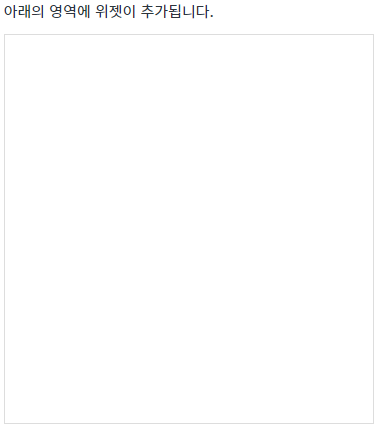
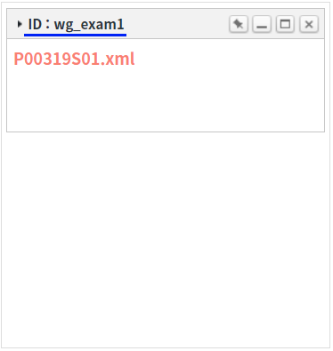
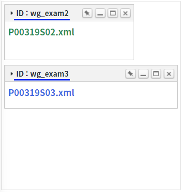

WidgetContainer의 'addWidgets' 메소드를 사용하여 단건 위젯과 다건 위젯을 추가하는 예제입니다. 위젯을 추가하는 기본 예제로 'addWidgets' 메소드의 필수 설정 값을 확인할 수 있습니다.
단건 위젯 추가하기
다건 위젯 추가하기
1
STEP 1: 초기 상태를 확인합니다.
WidgetContainer에 추가된 위젯이 없습니다.
Image 1.브라우저(Chrome) 실행 예시

2
STEP 2: 단건 위젯 추가하기
'단건 위젯 추가하기' 버튼을 클릭합니다.3
STEP 3: 실행된 결과를 확인합니다.
위젯의 타이틀이 'ID : wg_exam1'인 위젯이 추가됩니다.
Image 2.브라우저(Chrome) 실행 예시

1
STEP 1: 초기 상태를 확인합니다.
WidgetContainer에 추가된 위젯이 없습니다.
Image 3.브라우저(Chrome) 실행 예시
2
STEP 2: 다건 위젯 추가하기
'다건 위젯 추가하기' 버튼을 클릭합니다.3
STEP 3: 실행된 결과를 확인합니다.
위젯의 타이틀이 'ID : wg_exam2'와 'ID : wg_exam3'인 위젯 2개가 추가됩니다.
Image 4.브라우저(Chrome) 실행 예시

WidgetContainer의 'addWidgets' 메소드를 사용하여 스크립트를 작성합니다. 'addWidgets' 메소드의 첫 번째 인자에 위젯 정보가 담긴 JSON을 할당합니다. 세부 설정은 아래의 스크립트 예시에 작성되어 있습니다.
Example 1.Script
// 위젯 생성 옵션 정보 var widgetOptions = {}; // [필수] 위젯 ID. 동일한 ID를 가진 위젯이 있으면 추가되지 않습니다. widgetOptions.id = "wg_exam1"; // [필수] 위젯 파일 경로 widgetOptions.src = "/page/P00319S01.xml"; // [필수] scope 적용 여부로 true 고정 widgetOptions.scope = true; // [필수] 위젯 너비 : (설정 값 / WidgetContainer의 속성 'col'의 설정 값 * 100)으로 '%'단위로 그려집니다. widgetOptions.unitWidth = 4; // [필수] 위젯 높이 : (설정 값 * WidgetContainer의 속성 'unitHeightPixel'의 설정 값)으로 'px'단위로 그려집니다. widgetOptions.unitHeight = 6; // [권장] 위젯 타이틀 widgetOptions.title = "ID : wg_exam1"; // 위젯의 x 위치 widgetOptions.x = 0; // 위젯의 y 위치 widgetOptions.y = 0; // WidgetContainer 'wgc_exam1'에 위젯 1개를 추가합니다. wgc_exam1.addWidgets(widgetOptions); // 추가된 위젯이 있는지의 여부를 판단할 때 메소드 'getWidgetByTitle( id )'를 사용할 수 있습니다.
WidgetContainer의 'addWidgets' 메소드를 사용하여 스크립트를 작성합니다. 'addWidgets' 메소드의 첫 번째 인자에 위젯 정보가 담긴 JSON을 Array에 담아 할당합니다. 세부 설정은 아래의 스크립트 예시에 작성되어 있습니다.
Example 2.Script
// 위젯 'wg_exam2' 생성 옵션 정보 var widgetOptions1 = {}; // [필수] 위젯 ID. 동일한 ID를 가진 위젯이 있으면 추가되지 않습니다. widgetOptions1.id = "wg_exam2"; // [필수] 위젯 파일 경로 widgetOptions1.src = "/page/P00319S02.xml"; // [필수] scope 적용 여부로 true 고정 widgetOptions1.scope = true; // [필수] 위젯 너비 : (설정 값 / WidgetContainer의 속성 'col'의 설정 값 * 100)으로 '%'단위로 그려집니다. widgetOptions1.unitWidth = 3; // [필수] 위젯 높이 : (설정 값 * WidgetContainer의 속성 'unitHeightPixel'의 설정 값)으로 'px'단위로 그려집니다. widgetOptions1.unitHeight = 5; // [권장] 위젯 타이틀 widgetOptions1.title = "ID = wg_exam2"; // 위젯의 x 위치 widgetOptions1.x = 0; // 위젯의 y 위치 widgetOptions1.y = 6; // 위젯 'wg_exam3' 생성 옵션 정보 (주석 생략) var widgetOptions2 = {}; widgetOptions2.id = "wg_exam3"; widgetOptions2.src = "/page/P00319S03.xml"; widgetOptions2.scope = true; widgetOptions2.unitWidth = 4; widgetOptions2.unitHeight = 4; widgetOptions2.title = "ID = wg_exam3"; widgetOptions2.x = 0; widgetOptions2.y = 11; // WidgetContainer 'wgc_exam1'에 위젯 2개를 추가합니다. 위젯의 생성 정보 JSON을 Array에 담아 인자로 할당합니다. wgc_exam1.addWidgets([widgetOptions1, widgetOptions2]); // 추가된 위젯이 있는지의 여부를 판단할 때 메소드 'getWidgetByTitle( id )'를 사용할 수 있습니다.
addWidgets( option )
option.id
option.src
option.scope
option.unitWidth
option.unitHeight
option.title
option.x
option.y